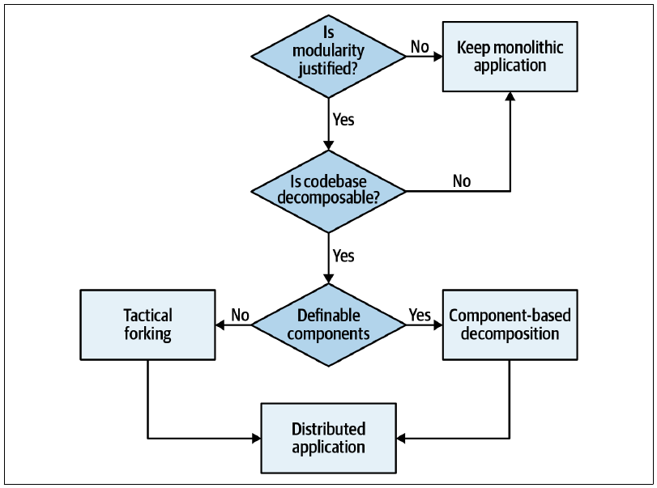
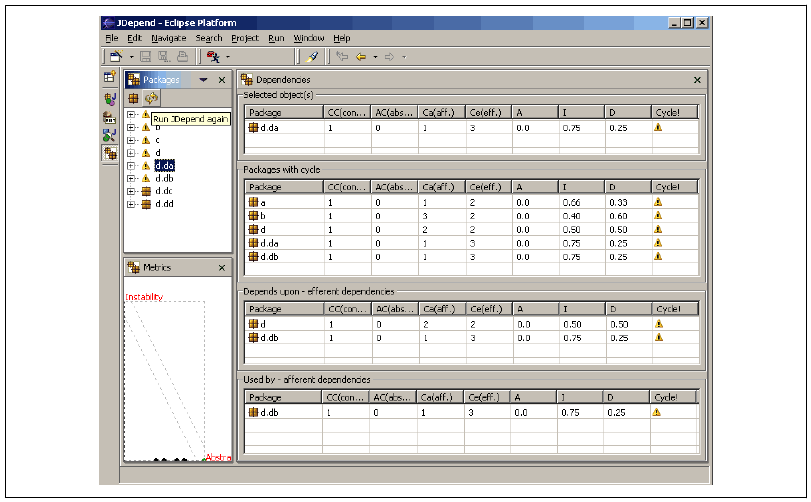
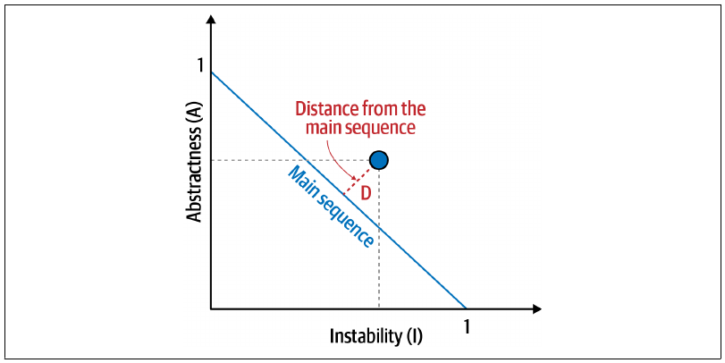
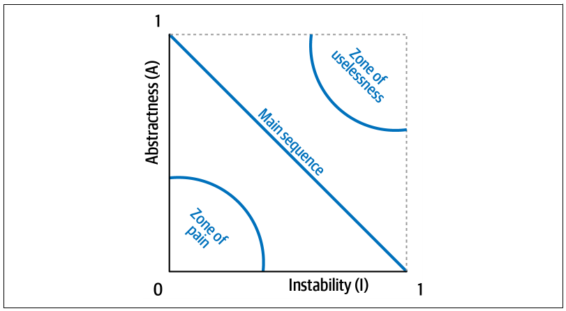
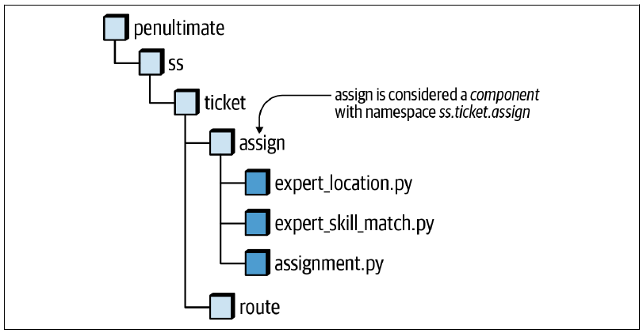
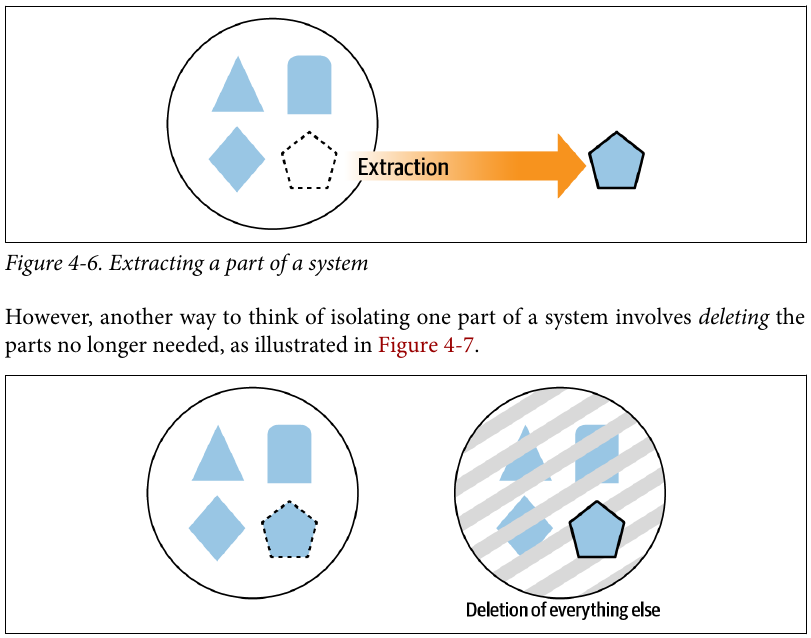
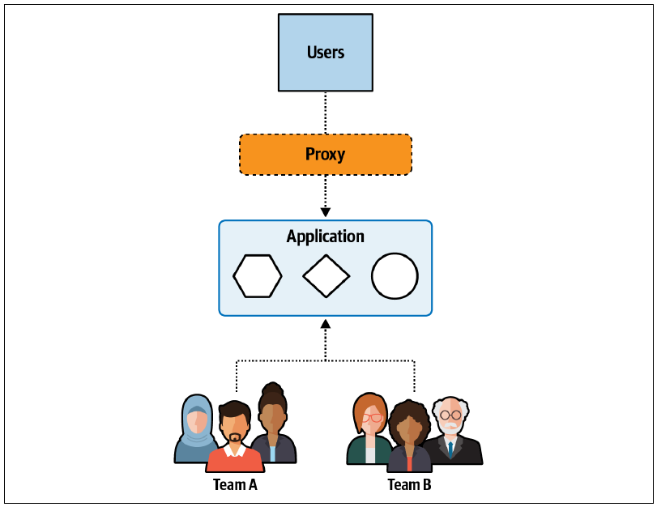
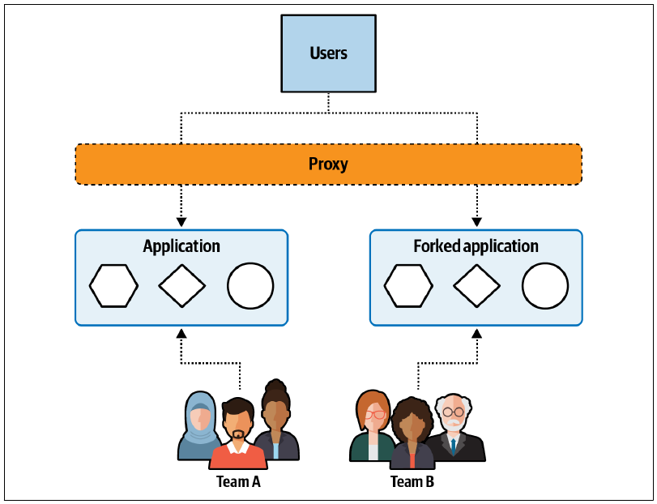
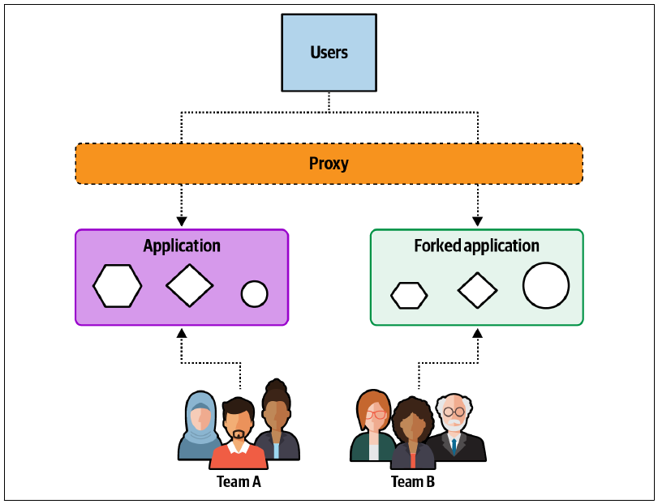
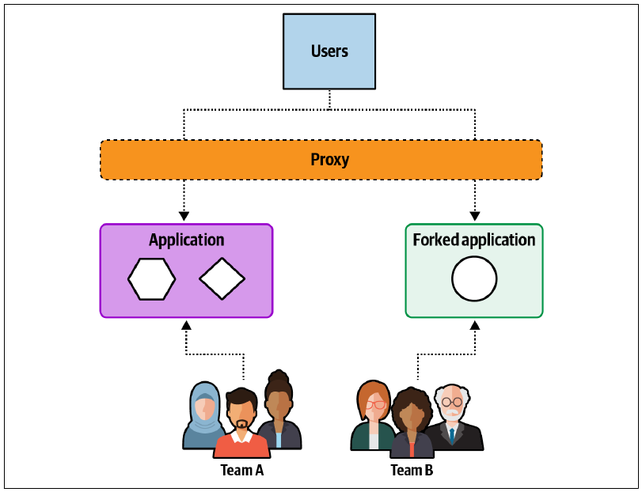

4 架构分解
10 月 4 日，星期一，10:04
Addison 和 Austen 已获准迁移到分布式架构，拆分单体 Sysops Squad 应用。现在，他们需要确定从何着手，以及哪一种方法最好。
“应用太大了，我甚至不知道从哪里开始。它简直像大象一样大！”Addison 感叹道。
“那么，”Austen 说，“怎样吃掉一头大象？”
“哈，这个笑话我听过，Austen。当然是一口一口吃！”Addison 笑道。
“正是如此。那就把同样的原则用到 Sysops Squad 应用上。”Austen 说，“何不一口一口开始拆？还记得我说报告功能是导致应用卡死的因素之一吗？也许可以从那里着手。”
“这可能是个不错的起点，”Addison 说，“但数据怎么办？只把报告做成独立服务并不能解决问题。我们还得拆分数据，甚至另建报告数据库，并用数据泵向它输送数据。我觉得刚开始就咬这么大一口，实在太难了。”
“你说得对。”Austen 说，“嘿，知识库功能怎么样？它相当独立，提取起来也许比较容易。”
“确实。调查功能呢？它应该也很容易分离。”Addison 说，“问题是，我总觉得应当采用更系统的方法，而不能只是一口一口地吃掉大象。”
“也许 Logan 能给些建议。”Austen 说。
Addison 和 Austen 与 Logan 会面，讨论他们正在考虑的几种应用拆分方法。两人解释说，他们想先处理知识库和调查功能，却不知道之后该做什么。
“你们提出的方法，”Logan 说，“就是所谓的‘大象迁移反模式’。一口一口吃掉大象，起初似乎是个好办法，但多数情况下会演变成缺乏结构的方法，最终形成分布式大泥球；也有人称它为分布式单体。我不建议这样做。”
“那么还有哪些方法？有没有可以用来拆分应用的模式？”Addison 问。
“需要从整体上审视应用，然后采用战术分叉或基于组件的分解。”Logan 说，“这是我知道的两种最有效方法。”
Addison 和 Austen 看着 Logan：“可我们怎么知道该用哪一种？”
架构模块化描述的是为什么要拆分单体应用，架构分解则描述怎样拆分。拆分庞大、复杂的单体应用可能是一项复杂而耗时的工作；在开始之前，务必知道它是否可行，以及应当采用什么方法。
基于组件的分解和战术分叉，是拆分单体应用的两种常见方法。
基于组件的分解是一种提取方法。它应用多种重构模式，逐步精炼并提取组件——应用的逻辑构建块——以渐进且受控的方式形成分布式架构。
战术分叉则先复制应用，再逐步削除不需要的部分，最终形成服务；这类似于雕塑家从花岗岩或大理石块中雕刻出精美作品。
哪一种方法最有效？答案当然是：视情况而定。
选择分解方法的一项主要因素，是现有单体应用代码的结构是否良好。代码库中是否存在清晰的组件和组件边界？还是说，代码库基本上是一个缺乏结构的大泥球？
图 图 4.1 的流程图表明，架构分解工作的第一步，是确定代码库是否能够分解，下一节会详细讨论。如果代码库可分解，下一步要判断源代码是不是一团缺乏结构的混乱内容，完全没有可清晰定义的组件。如果确实如此，战术分叉很可能是正确方法。反过来，如果源代码文件把同类功能组织在定义良好——甚至只是宽松定义——的组件中，就应采用基于组件的分解。

本章会介绍这两种方法；第 5 章则用一整章详细说明每一种基于组件的分解模式。
4.1 代码库是否可分解？
如果代码库缺少内部结构，会发生什么？它还能被分解吗？这类软件有一个通俗名称——大泥球反模式。Brian Foote 在 1999 年一篇同名文章中创造了这个说法。例如，一个复杂 Web 应用把事件处理器直接连接到数据库调用、完全没有模块化，就可以视为大泥球架构。
架构师通常不会花太多时间为这类系统创建模式：软件架构关注内部结构，而这些系统恰恰缺少这一决定性特征。
遗憾的是，如果没有谨慎治理，许多软件系统都会退化成大泥球，只能留给后来的架构师——或者留给已经被自己厌恶的过去那个自己——去修复。
任何架构重构工作的第一步，都是由架构师确定重构计划；而要制订计划，必须理解内部结构。因此，架构师需要回答的关键问题是：这个代码库还有没有挽救的可能？换言之，它是否适合应用分解模式，还是说其他方法更合适？
没有任何单一指标能够判定代码库是否拥有合理的内部结构，这项评估要由一名或多名架构师完成。不过，架构师确实拥有一些工具，可以帮助判断代码库的宏观特征，尤其是通过耦合指标评估其内部结构。
4.1.1 传入耦合与传出耦合
1979 年，Edward Yourdon 和 Larry Constantine 出版《结构化设计：计算机程序和系统设计学科基础》（Structured Design: Fundamentals of a Discipline of Computer Program and Systems Design），定义了许多核心概念，其中包括传入耦合和传出耦合指标。
传入耦合（afferent coupling）度量一个代码制品——组件、类、函数等——拥有多少条传入连接。传出耦合（efferent coupling）则度量它连接到其他代码制品的传出连接。
仅仅这两项度量，在改变系统结构时就很有价值。例如，把单体解构为分布式架构时，架构师会发现 Address 等共享类。构建单体时，开发人员复用 Address 这样的核心概念十分常见，也值得鼓励；但拆分单体时，架构师必须弄清系统还有多少其他部分使用这项共享资产。
几乎每个平台都有工具帮助架构师分析代码的耦合特征，从而重构、迁移或理解代码库。各类平台上都有许多工具可以用矩阵视图展示类和/或组件关系，如图 图 4.2 所示。

在这个例子中，Eclipse 插件把 JDepend 的输出可视化，其中包含按包进行的耦合分析，以及下一节重点介绍的一些聚合指标。
4.1.2 抽象度与不稳定度
软件架构领域的知名人物 Robert Martin 在 20 世纪 90 年代末为一本 C++ 图书创建了一些派生指标，它们适用于任何面向对象语言。其中的抽象度与不稳定度，用于衡量代码库内部特征是否平衡。
抽象度是抽象制品——抽象类、接口等——相对于具体制品——实现类——的比例。它度量抽象与实现之间的关系。抽象元素可以帮助开发人员更好地理解代码库的总体功能。例如，一个代码库只有一个 main() 方法，却包含 10,000 行代码，那么它在这项指标上的得分会接近于零，而且很难理解。
抽象度的公式如下：
\[ A = \frac{\sum m_a}{\sum m_c + \sum m_a} \]
其中，\(m_a\) 表示代码库中的抽象元素——接口或抽象类，\(m_c\) 表示具体元素。架构师用抽象制品总数除以抽象制品与具体制品的总数，得到抽象度。
另一个派生指标不稳定度，是传出耦合相对于传出与传入耦合总和的比例：
\[ I = \frac{C_e}{C_e + C_a} \]
其中，\(C_e\) 表示传出耦合，\(C_a\) 表示传入耦合。
不稳定度指标用于判断代码库的易变程度。高度不稳定的代码库由于耦合很高，发生变更时更容易损坏。设想两个场景，它们的 \(C_a\) 都为 2。第一个场景中 \(C_e=0\)，所以不稳定度为零；另一个场景中 \(C_e=3\)，所以不稳定度为 \(3/5\)。因此，组件的不稳定度反映相关组件发生变化时，可能迫使该组件进行多少潜在变更。
不稳定度接近 1 的组件高度不稳定；接近 0 时，则可能稳定，也可能僵化。如果模块或组件主要包含抽象元素，它就是稳定的；如果主要由具体元素组成，它就是僵化的。不过，高稳定性的权衡是复用能力不足——如果每个组件都完全自包含，往往就会出现重复。
所以，一般必须把 \(I\) 与 \(A\) 结合起来看，而不能孤立考察。这正是下一节引入主序的原因。
4.1.3 到主序的距离
架构师可以用来评估架构结构的少数整体性指标之一，是到主序的距离。它是根据不稳定度和抽象度得到的派生指标：
\[ D = A + I - 1 \]
其中，\(A\) 表示抽象度，\(I\) 表示不稳定度。
到主序的距离假定抽象度和不稳定度之间存在一种理想关系；落在这条理想直线附近的组件，能健康地平衡这两个相互竞争的关注点。例如，把某个组件画到图中后，开发人员就能计算它到主序的距离，如图 图 4.3 所示。

开发人员在图中标出候选组件，再测量它到理想直线的距离。组件越靠近这条线，平衡就越好。过于深入右上角的组件会进入架构师所说的无用区：代码太抽象，就很难使用。反过来，落入左下角的代码会进入痛苦区：实现太多、抽象不足，会导致代码脆弱而难以维护，如图 图 4.4 所示。

许多平台都有提供这些度量的工具。当架构师因为不熟悉代码库、需要迁移，或要评估技术债而分析代码库时，这些工具都能提供帮助。
到主序的距离能告诉准备重构应用的架构师什么？与建筑工程一样，移动一个地基不良的大型结构会带来风险。类似地，如果架构师准备重构应用，先改善内部结构，就能使整个实体更容易迁移。
这项指标还能很好地提示内部结构是否平衡。如果评估代码库时，许多组件都落入无用区或痛苦区，那么花时间把内部结构加固到可修复的程度，也许并不是明智选择。
按照图 图 4.1 的流程图，架构师判定代码库可分解之后，下一步是选择分解应用的方法。下面介绍两种方法：基于组件的分解和战术分叉。
4.2 基于组件的分解
根据我们的经验，把单体应用迁移到微服务这样的高度分布式架构时，大多数困难和复杂性都来自定义不良的架构组件。
这里把组件定义为应用中的构建块：它在系统中拥有明确定义的角色和职责，以及一组明确定义的操作。大多数应用的组件表现为命名空间或目录结构，并通过组件文件或源文件实现。例如，在图 图 4.5 中，目录结构 penultimate/ss/ticket/assign 代表一个名为“工单分配”的组件，其命名空间为 penultimate.ss.ticket.assign。

把单体应用拆成分布式架构时，应当用组件构建服务，而不是用单个类构建服务。
在多年把单体应用迁移到微服务等分布式架构的共同经验中，我们形成了一组第 5 章介绍的基于组件的分解模式，用来为单体应用的迁移做好准备。这些模式通过重构源代码，形成一组定义良好的组件；它们最终可以变成服务，从而减少把应用迁移到分布式架构所需的工作。
这些模式实质上让单体架构可以迁移到第 2 章定义的基于服务架构。《软件架构基础》对此还有更详细的介绍。基于服务架构是微服务架构风格的一种混合形式：应用被拆成领域服务，也就是包含某一领域全部业务逻辑、独立部署的粗粒度服务。
迁移到基于服务架构，既可以作为最终目标，也可以作为走向微服务的垫脚石：
- 作为垫脚石，它让架构师可以判断哪些领域需要进一步细分为微服务，哪些可以继续作为粗粒度领域服务。第 7 章会详细讨论这项决策。
- 基于服务架构不要求拆分数据库。因此，架构师可以先关注领域和功能分区，再处理数据库分解。第 6 章会详细讨论后者。
- 基于服务架构不要求运行自动化或容器化。每项领域服务都可以继续使用原应用的部署制品，例如 EAR 文件、WAR 文件或程序集进行部署。
- 迁移到基于服务架构是一项技术工作，通常不涉及业务利益相关者，也不要求改变 IT 部门的组织结构、测试环境或部署环境。
把单体应用迁移到微服务时，可以考虑先迁移到基于服务架构，把它作为走向微服务的垫脚石。
但如果代码库是一团缺乏结构的大泥球，没有多少可观察的组件呢？这就轮到战术分叉登场了。
4.3 战术分叉
战术分叉模式由 Fausto De La Torre 命名，是一种重构大泥球架构的务实方法。
架构师思考如何重构代码库时，通常首先想到的是提取某些部分，如图 图 4.6 所示。

不过，还可以换一种方式思考如何隔离系统的一部分：删除不再需要的部分，如图 图 4.7 所示。

图 图 4.6 中，开发人员必须不停处理定义该架构的大量耦合线索。提取某个部分时，他们会发现由于存在依赖，必须把越来越多的单体内容一起带走。图 图 4.7 中，开发人员删除不需要的代码，但依赖仍然保留，从而避免提取过程中不断拆解耦合的影响。
提取与删除的差异，启发了战术分叉模式。这种分解方法从一个单体应用开始，如图 图 4.8 所示。

这个系统包含多种领域行为——图中用简单几何形状表示——但几乎没有内部组织。在这个场景中，期望目标是让两个团队从现有单体中创建两项服务：一项服务包含六边形和正方形领域，另一项包含圆形领域。
战术分叉的第一步，是克隆整个单体，给每个团队一份完整代码库的副本，如图 图 4.9 所示。

每个团队都获得整个代码库的副本，然后开始删除不需要的代码，而不是提取想要的代码。在紧密耦合的代码库中，开发人员往往认为这种方式更容易，因为不必设法提取高耦合产生的大量依赖。删除策略中，功能一旦被隔离，就可以删除任何不会导致其他内容损坏的代码。
随着模式继续推进，团队开始隔离目标部分，如图 图 4.10 所示。随后，每个团队继续逐步删除不需要的代码。

战术分叉模式完成时，团队已经把原单体应用拆成两个部分，并在每个部分中保留行为的粗粒度结构，如图 图 4.11 所示。

至此重构完成，结果是两项粗粒度服务。
4.3.1 权衡
战术分叉是较正式分解方法的一种可行替代方案，最适合内部结构很少或完全没有内部结构的代码库。与所有架构实践一样，它也包含自身的权衡。
好处
- 团队几乎无须任何前期分析，就可以立即开始工作。
- 开发人员通常认为删除代码比提取代码更容易。从混乱代码库中提取代码会因高耦合而非常困难；不再需要的代码则可以通过编译或简单测试来确认。
缺点
- 生成的服务很可能仍保留单体中大量几乎不会执行的遗留代码。
- 除非开发人员投入额外精力，否则新服务内部的代码并不会比原单体中的混乱代码更好，只是数量少了一些。
- 共享代码与共享组件文件的命名可能不一致，导致公共代码难以识别，也难以保持一致。
这个模式的名字十分贴切——优秀的模式名称都应如此。它为重构架构提供的是一种战术性而非战略性的方法，让团队可以快速把重要或关键系统迁移到下一代平台，尽管迁移过程并不十分规整。
4.4 Sysops Squad 案例：选择分解方法
10 月 29 日，星期五，10:01
Addison 和 Austen 已经理解两种方法，于是来到主会议室，使用抽象度和不稳定度指标分析 Sysops Squad 应用，判断哪种方法更适合当前情况。
“看看这个，”Addison 说，“大部分代码都落在主序附近。当然也有几个离群点，但我认为可以断定，这个应用是能够拆分的。下一步就是决定采用哪种方法。”
“我真的很喜欢战术分叉，”Austen 说，“这让我想到那些著名雕塑家。别人问他们如何从整块大理石中雕出如此美丽的作品，他们会回答：只是把不该存在的大理石去掉。我觉得 Sysops Squad 应用也可以成为我的雕塑！”
“先别急，米开朗琪罗，”Addison 说，“先是体育，现在又是雕塑？你得想清楚业余时间到底喜欢做什么。我不喜欢战术分叉的一点，是每项服务都会存在重复代码和共享功能。我们的大多数问题都与可维护性、可测试性和整体可靠性有关。想象一下，同一项变更必须同时应用到好几项服务上，那会是一场噩梦！”
“可是，共享功能到底有多少？”Austen 问。
“我不确定，”Addison 说，“但我知道日志、安全等基础设施功能共享了不少代码；应用持久层中的很多数据库调用也是共享的。”
Austen 停下来想了想 Addison 的论点。“也许你是对的。既然我们已经定义了良好的组件边界，我愿意采用速度较慢的基于组件分解方法，放弃我的雕塑事业。不过体育我是不会放弃的！”
Addison 和 Austen 最终一致认为，基于组件的分解最适合 Sysops Squad 应用。Addison 为这个决定编写了一份 ADR，列明该方法的权衡与理由。
背景
我们将把单体 Sysops Squad 应用拆成若干独立部署的服务。迁移到分布式架构时，我们考虑了两种方法：战术分叉与基于组件的分解。
决策
我们将采用基于组件的分解方法，把现有单体 Sysops Squad 应用迁移到分布式架构。
该应用具有定义良好的组件边界，适合采用基于组件的分解方法。
这种方法可以降低每项服务中都需要维护重复代码的概率。
采用战术分叉时，我们必须预先定义服务边界，才能知道需要创建多少份应用副本。采用基于组件的分解时，服务定义会在组件分组过程中自然浮现。
鉴于当前应用在可靠性、可用性、可扩展性和工作流方面存在的问题，基于组件的分解比战术分叉提供了更安全、可控的渐进式迁移路径。
后果
基于组件的分解可能比战术分叉耗时更长。不过，我们认为上述理由足以抵消这一代价。
这种方法允许团队中的开发人员协作识别共享功能、组件边界和领域边界。战术分叉则要求把团队拆成多个更小、彼此独立的团队，分别负责每个应用副本，并会增加小团队之间所需的协调工作。